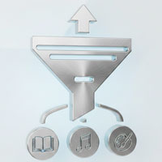

MixItUp フィルター実装

- プロンプト例
MixItupでフィルターを実装したい
- MixItUp CDN
- 「春の花」「夏の花」「秋の花」「冬の花」のフィルター
完成イメージ
- ボタンで 季節別に絞り込み
- アニメーション付きで表示切替
① MixItUp CDN 読み込み
<script src="https://cdn.jsdelivr.net/npm/mixitup@3/dist/mixitup.min.js" defer></script>
② HTML構造（フィルターボタン + アイテム）
<div class="filter-controls"> <button data-filter="all">すべて</button> <button data-filter=".spring">春の花</button> <button data-filter=".summer">夏の花</button> <button data-filter=".autumn">秋の花</button> <button data-filter=".winter">冬の花</button> </div> <div class="container"> <div class="mix spring">🌸 桜</div> <div class="mix spring">🌷 チューリップ</div> <div class="mix summer">🌻 ひまわり</div> <div class="mix summer">🌺 ハイビスカス</div> <div class="mix autumn">🍁 もみじ</div> <div class="mix autumn">🌼 菊</div> <div class="mix winter">❄️ 椿</div> <div class="mix winter">🎍 松</div> </div>
③ CSS（グリッドレイアウト + デザイン）
※ ユーザー好みの CSS Grid 構成にしています。
.filter-controls{ text-align:center; margin-bottom:20px; } .filter-controls button{ padding:8px 16px; margin:4px; border:none; background:#333; color:#fff; border-radius:4px; cursor:pointer; } .filter-controls button:hover{ background:#555; } .container{ display:grid; grid-template-columns:repeat(auto-fit, minmax(140px, 1fr)); gap:15px; } .mix{ padding:20px; background:#f2f2f2; text-align:center; border-radius:8px; font-size:16px; }
④ JavaScript（MixItUp 初期化）
<script> var mixer = mixitup('.container', { animation: { duration: 300 } }); </script>
⑤ 仕組み解説（重要）
| 部分 | 役割 |
|---|---|
| .mix | MixItUpで操作される要素 |
| .spring 等 | カテゴリ識別用クラス |
| data-filter=".spring" | 対象クラスを指定 |
| .container | 全体ラッパー |
【例】
<button data-filter=".spring">春の花</button>
→ .spring クラスを持つ .mix 要素だけ表示
⑥ 実務でよく使う拡張（アクティブボタン）
【javascript】
const buttons = document.querySelectorAll('.filter-controls button'); buttons.forEach(btn => { btn.addEventListener('click', () => { buttons.forEach(b => b.classList.remove('active')); btn.classList.add('active'); }); });
【css】
.filter-controls button.active{ background:#ff7b00; }